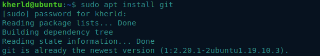
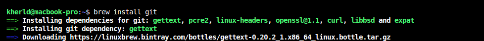
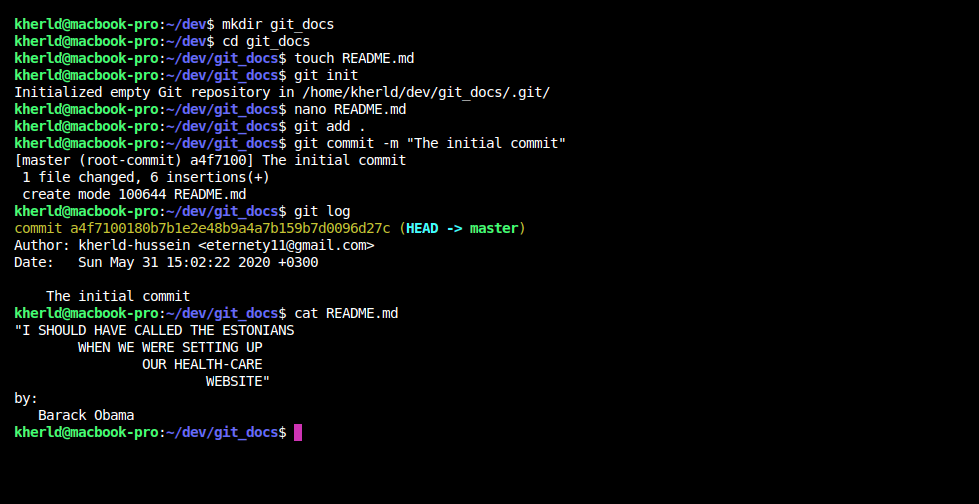

Learn Version Control with Git & Github to Be A Programmer is an introduction to git for absolute beginners,this tutorial is designed to teach the common foundations of programming to as broad as plausible. It is aimed both at those who work with software developers and those who aspire to become developers themselves.
Version Control is about the management of multiple versions of a project. To manage a version, each change [addition, edition, or removal] to the files in a project must be tracked. Version Control records each change made to a file [or a group of files] and offers a way to undo or roll back each change.
Git is the free and open source distributed version control system that's responsible for everything GitHub related that happens locally on your computer. Git stretches the very notion of version control systems [VCS] by its ability to offer almost all of its features for use offline and without a central server.
We will start looking at the basic git commands to help us get started. This will start
by installing git in our system,
for windows users you may proceed to git for windows,
Mac users click the following for macOS,
as for linux users, Git with your package manager might be a piece of cake for you.
For Ubuntu- and Debian-flavored distributions, you use APT to install Git.
The installation proceess very simple in all the operating systems. you may also want visit git for all platforms
.
We will
cover installation in linux which similar to macOS, as for windows users, you will download the binary from the link above.
for linux users [Debian-based destros] type:
as for macOS users proceed by:
After the installation we'll create a github account. click here to create a free github account, then we will configure our account we've just created to used across all local repositories.
From a command prompt [terminal or CMD ], change directories to your desktop , development folder or an existing project that you want to put under version control. Then we proceed from there by typing the following command:
The first command in the sequence, mkdir, creates a new folder where we will store all our project files. You may want to proceed with your existing project, or create a folder with the different name as well.
Next, cd [change directory] gets us into the new folder we've just created.
The next command creates an empty file in the directory named README.md. You can skip this part if you decided to proceed with a repository from a directory with files in it.
The next command opens a test editor with a file name created previously, you may use any of your choice eg. Vi, Vim, Pico or even the most basic but out of the CLI [Command Line Interface] called notepad. Inside the file, you may write a short story of your life or most interesting code you've ever write in your life without bugs. However, you may prefer to keep it simple and write all the new commands you've learnt so far with their meaning the way you've understood them.
Git init, builds a .git directory that contains all the metadata and repository history. Unlike many other version control systems, Git uniquely stores everything in just a single directory at the top of the project.
Following the directory initialization, the add command with the dot wildcard tells Git to start tracking changes for the current directory, its files, and for all folders beneath, if any exist.
Lastly, the commit function takes all previous additions and makes them permanent in the repository’s history in a transactional action. Rather than letting Git prompt the user via the default text editor, the -m option preemptively supplies the commit message to be saved alongside the committed files.
It is amazing and exciting ☺ to be able to truthfully say that I can use
the basics of Git for locally versioning of files with just these commands.
What if we want to clone a remote repository, or contribute into other people's projects ...?
An equally common use case for Git is starting from someone else’s
repository history.
The syntax to pull down a local copy of an existing repo is:
The clone command performs several subtasks under the hood. It sets up a remote (a Git repository address bookmark) named origin that points to the location https://github.com/kisumu-poly-tech-hub/collaboration-tools.git. Next, clone asks this location for the contents of its entire repository. Git copies those objects in a zlib-compressed manner over the network to the requestor’s local disk. Lastly, lone switches to a branch named master, as the current working copy.
we'll continue with the rest of the commads and many other more in details.